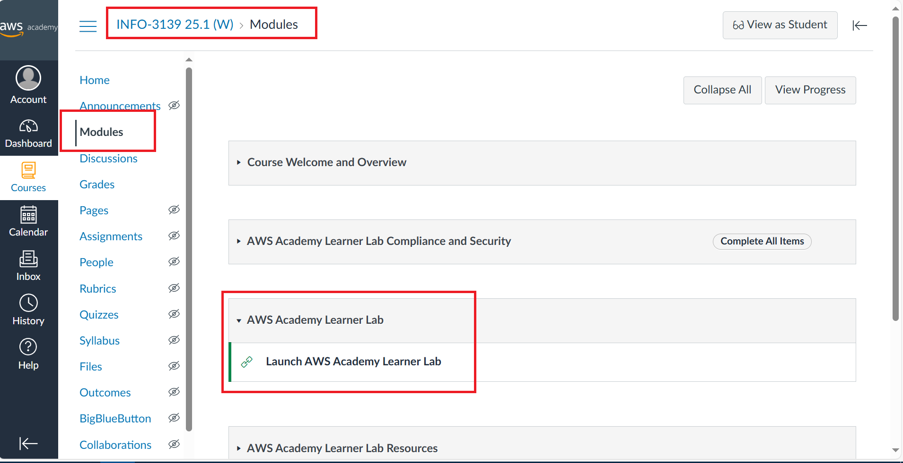
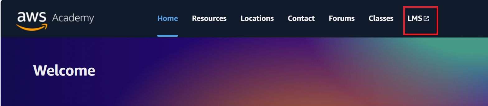

In this Lab we'll outline the final requirements for your Project 1, then go through the process of creating a build of the app and deploying it to AWS.
Before you build and deploy your app for the Case Study, there's a couple of final requirements to complete:
The following requirements should be added to the existing User Creation feature.
User Update
You should implement the ability to update an existing user with the following requirements:
Some implementation help for the validation:
<TextField> component to set the textSome implementation help for the automatic selection:
[...oldArray, newItem]Add the following script to the client's package.json to automate the process of copying build files.
This will only work if your server's static file directory is called public/ and your project structure matches:
-- <your-project-1-folder>/
-- -- server/
-- -- client/
You can modify the following script to match your project.
"scripts": {
"dev": "vite",
"build": "vite build",
"lint": "eslint .",
"preview": "vite preview",
"build-and-copy": "vite build & xcopy /hiev dist\\* ..\\server\\public\\ /Y"
},You can use it to build and automatically copy to server/public/ folder
If the script doesn't work, or if you just want to make sure it's a clean build, build the client, then delete the files inside server/public/ and copy the contents of dist/ manually into the server/public/ folder like Lab 9.
Once the client is built and copied into the public/ folder of the server/, hold Ctrl then click to select the following folders and files from your server/ project:
data/modules/public/package.jsonserver.jsThen Right-click server.js > Sent to > Compressed (zipped) folder.
Next, ensure that your Atlas Cluster can be accessed from anywhere (0.0.0.0/0) added to the IP Address list.
Go to https://awsacademy.instructure.com/courses/112256 and login through Student Login
If you need to register, check your FOL inbox for the invite
Go to Modules and scroll down until you find Launch AWS Academy Learner Lab

Then click LMS.

Click Start Lab and wait until AWS turns green. Once it's green, click it.
Search for Elastic Beanstalk and select that service from the search results
Select Create Application
Select Web server environment and set an application name and environment name.
Select Managed platform, then select Node.js and leave the default values.
Then select Upload your code, set a version label, select Local file and upload your server zip.
Scroll down, then select NEXT.
Choose "Use an existing service role" and select LabRole, vockey, and LabInstanceProfile.
Then click Skip to review.
Scroll down to Step 5: Configure updates, monitoring and logging and click Edit
Then, scroll all the way to the bottom and select Add environment property
Add all the key value pairs from your .env except for PORT.
Press NEXT, then SUBMIT, then wait until your application is deployed.
Once it says Environment successfully launched, you can click the link in Domain, and test your application.
Make sure to save (or bookmark) the link somewhere for your Case Study 1 Demo.
To get access to logs, find the Logs, request Full logs, and find the var/log/web.stdout file inside the zip.
The "Last 100 lines" log will be a tail of all of the system logs together, and not just the server's.
To update the build, select the Application versions tab, and click Upload.
Set a new version label, and upload your new build zip (make sure to re-build the client, re-copy, and re-zip)

Select the new version label, then under Actions, select Deploy